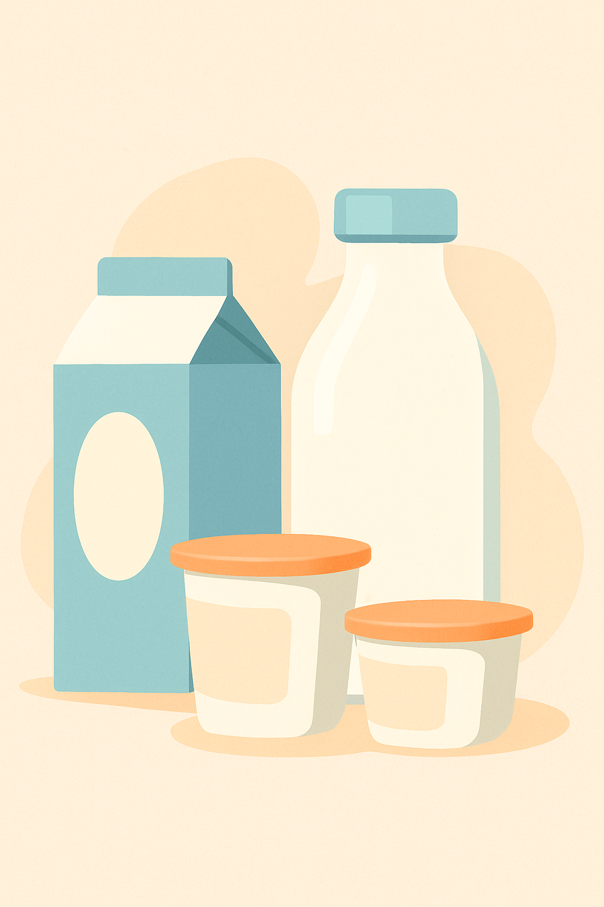
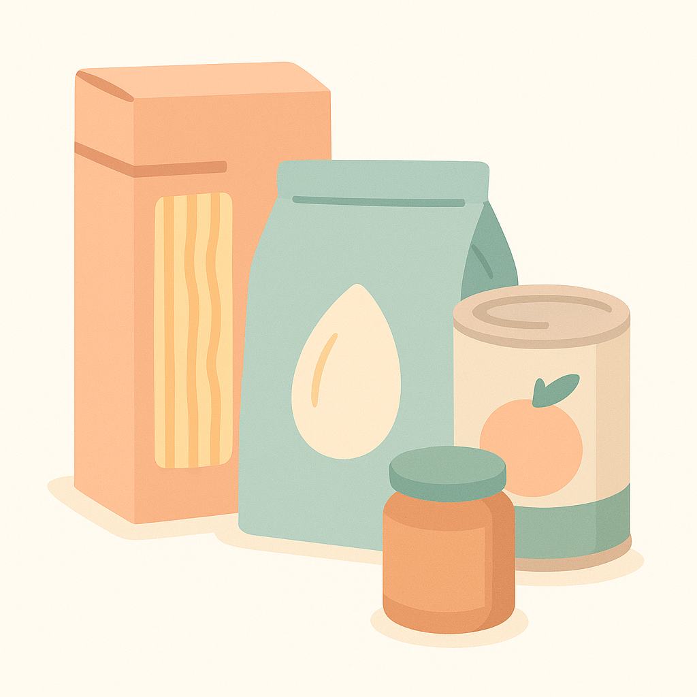
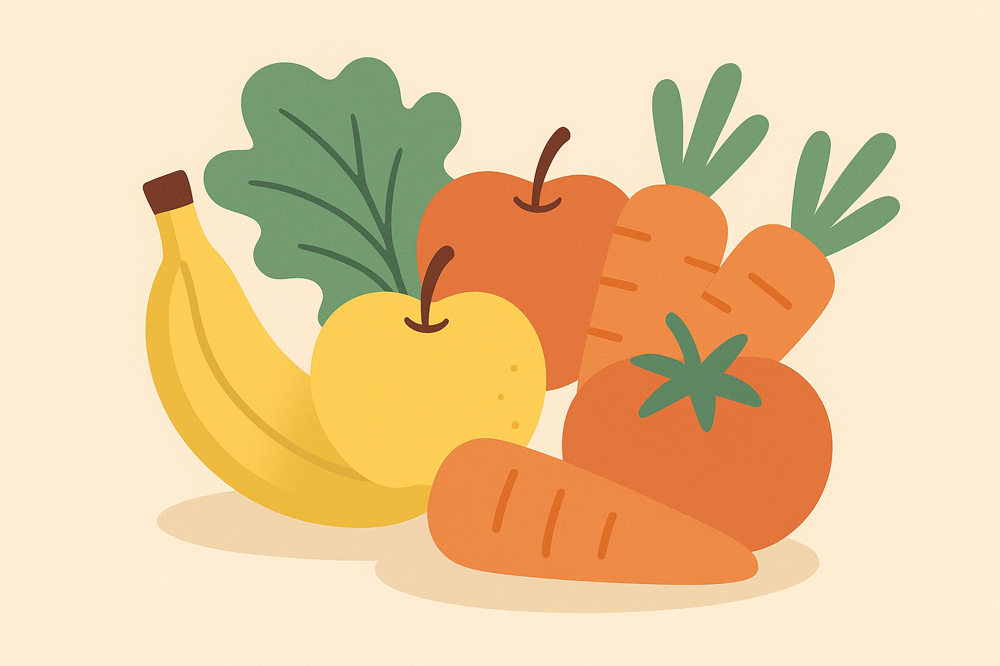

Nos produits
Faites votre choix parmi notre sélection de produits sauvés du gaspillage : frais, secs et fruits & légumes.

Yaourts nature (lot de 4)
1,20 € 2,50 €
Beurre doux 250 g
0,95 € 1,80 €

Pâtes complètes 500 g
0,60 € 1,20 €
Conserve de légumes variés
0,80 € 1,90 €

Pommes et carottes (1 kg)
1,50 € 3,00 €
Bananes mûres (1 kg)
0,90 € 1,80 €